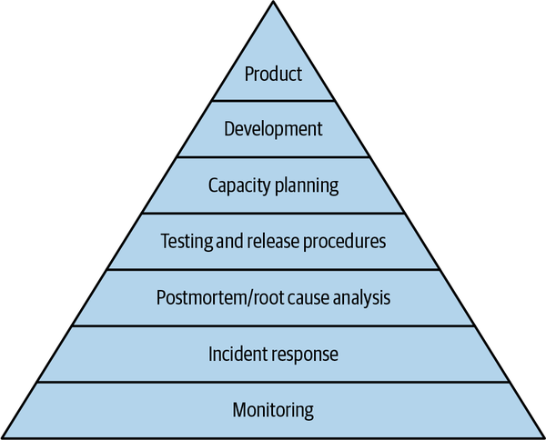
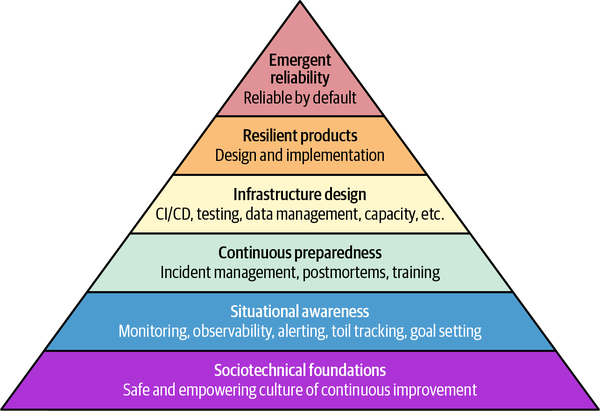

No matter how feature-rich a software product is, it is ultimately useless to the user if it is down, unusably slow, or inaccurate. To solve this fundamental problem and ensure businesses can reliably deliver their services, Site Reliability Engineering (SRE) has evolved into a broad industry movement. But what exactly is SRE?
The term SRE can be used to describe the field as a whole (Site Reliability Engineering), the individual doing the job (Site Reliability Engineer), and the team that individual is part of (the SRE team). Please keep this context in mind as you read the book. While most of the time in this chapter SRE refers to the field, there are cases where we are talking about individuals and teams.
At first glance, the name may seem a bit odd, but each word has a deeper meaning—and together, they give a pretty good high-level description of what SRE is about:
The first word in the name may be the most confusing one. It is much easier to understand when you know the origins of SRE. When the SRE function was established at Google in 2003, its mission was straightforward: “Keep the site (google.com) up.” Today, of course, the role of SRE teams across the industry is much more nuanced. But the core value remains: a direct connection to business impact. Enabling users to use the company’s products and services is why SRE exists. The dedication to the user is at the very core of SRE (see Chapter 4 for more details).
SRE has a very specific role in the development and operation of software products: reliability.1 This very clear focus is a key strength. It enables SREs to develop unique expertise and drive improvements that generalist software engineers could not deliver with the same quality or efficiency. Reliability is the purpose of SRE.
Engineering is the approach that SRE takes to deliver reliability for the business. It’s not heroics, superpowers, or dark magic. It’s using the software engineering mindset to solve reliability problems. This may sound like a technicality, but it’s what makes SRE game-changing. Engineering enables SRE work to be repeatable, scalable, efficient, and transferable. It is a core principle.
Reminding ourselves of the meaning of SRE helps us determine if a given project is SRE work:
Does it align with the business goals?
Does it improve reliability?
Does it take an engineering approach?
You can use these values as a north star on your SRE journey.
It’s important to note that SRE is not just a set of skills. It is a specific role. It’s hard to be a part-time SRE while handling completely unrelated work.2 SRE’s strength is bundling the expertise for reliable production systems in a specific function. This specialization requires dedicated time and the support of a community of experts. If SRE work is not your primary job responsibility, it’s hard to consistently make time for it. It’s always at risk of dropping below the cutoff line of your priorities. Additionally, not having a team of SREs around you makes it much harder to build a community in which to learn and grow your SRE skills.
SRE is a specialized role to solve problems where the knowledge of a generalist software engineer would typically be insufficient. SRE expertise is both deep and broad. The role is specialized because it focuses on a specific aspect of software engineering: production systems and their reliability. SRE expertise is deep because SREs can focus on the intricacies of complex production systems. They get more practice troubleshooting and designing production systems than a generalist software engineer does. SRE expertise is also broad because SREs tend to be responsible for many more systems than a typical product developer. This puts them in a position to be able to see across system boundaries, equipping them to solve end-to-end user experience problems that transcend those boundaries. They can also transfer experience gained from one system to another and thus drive horizontal improvements across the system landscape.
SRE is a dedicated voice for reliability. Just as reliability is at the core of the term SRE, it’s also at the core of the ethos behind the role. Reliability isn’t just one of many things SREs have to juggle; it’s their mission. This dedication is important, because reliability is a long-term investment that can easily be overridden by short-term needs, like the next big launch. Always having a voice at the table that seeks to balance these investments and that keeps working on reliability in the background helps keep the software ecosystem healthy.
Consciously investing in reliability is important for the business, because reliability is one of the most essential features of any software product. Nonfunctional requirements like availability, response times, scalability, efficiency, etc. are easily overlooked, but research shows that this can be costly to businesses large and small.3 The attention is almost always on the functional requirements, such as what features the software has to offer. However, when your product is down or unusably slow, it doesn’t matter to the user what functionality the software would offer if it worked. Similarly, a luxurious car with many niceties may be wonderful, but only if it runs. If it’s undrivable most of the time, most people would probably prefer a more basic car that just works. See Chapter 2 for more on the value of reliability.
SRE is an inherently collaborative function that seeks to bridge the organizational gap between development and operations. Therefore, SRE must never be antagonistic to its product development partners. It’s important that SREs function as enablers rather than gatekeepers. Operating and maintaining a reliable production environment helps developer productivity. It’s a virtuous cycle: healthy development practices enable healthy production systems. See Chapters 6 and 7 to explore how SREs and product developers collaborate.
Creating a dedicated SRE function, let alone funding entire SRE teams, is resource-intensive. Not every organization, particularly a small company, is in the position to do so. However, it’s still possible to benefit from leveraging SRE methods. The cultural principles of SRE techniques like service level objectives (SLOs), incident management, postmortems, and risk management can—and should—be applied outside of SRE. It is sometimes harder to establish and maintain them without the specialization and dedication of an explicit SRE function, but the DevOps movement is proof that it is very much possible. As long as the software ecosystem is not too complex, a generalist software engineer can maintain the necessary operational knowledge and understanding of SRE best practices to keep things running efficiently.
SRE owes much to the software engineering mindset. The phrase “SRE is what happens when you treat operations as a software problem” is probably the clearest way to meaningfully understand the field. SREs seek an algorithmic understanding of production problems and aim to solve them through the design, implementation, and modification of software and processes. This approach has three important advantages over a traditional model of operations.
The first advantage is gaining a fundamental understanding of production systems and operational processes, which enables SREs to get to the bottom of things. SRE attempts to make production health objectively measurable through mechanisms such as SLOs and observability. It aims to define operational processes like incident management from first principles. It seeks to provide a clear analysis of problems through processes such as blameless postmortems and risk management methods such as STPA and CAST (see Chapter 12). This rigor makes success repeatable and transferable while preserving the necessary flexibility and holistic view that highly mechanical IT operations processes may not have.
The second advantage of the software engineering mindset is the tendency toward automation (see Chapter 13). Software encodes a task in a form that can be executed by a computer. Automating operational tasks has two advantages:
The intuitive advantage. An automated task requires little or no human involvement to complete, freeing up time for other engineering work. Given that most software systems continually grow in complexity and scale, efficiency enables the SRE team to keep up with the workload. A core SRE principle states that you should work on automating yourself out of your current job, because otherwise you won’t have the capacity for taking on additional opportunities and the work they require.
The less obvious advantage. Code formalizes the execution of a task. There is no room for human error or accidental variation. Automation avoids small inconsistencies and issues sneaking into production. It can also drive simplification of production systems, although often the most complex tasks remain. While humans are good at improvising, handling edge cases is much more difficult in automation. Automation creates an incentive to simplify processes so that there are fewer edge cases.
Finally, the software engineering mindset promotes the integration of development and operations. SREs bridge the gap between product development and operations, because they speak the same language as the coders. They understand what software is capable of and what it isn’t capable of. They understand the software design and development process. They can provide an effective feedback loop from production back into the development process and translate the issues and concepts for the product developers.
To be fully effective, every SRE should be able to write code, even if it’s as simple as a monitoring config. Not every SRE needs to be a full-blown software engineer. SREs also need solid understanding of production systems, including operating systems, operational tooling, computer networks, databases, and distributed systems. Ideally, an SRE has a mix of software engineering and system engineering skills. See Chapter 5 for more details.
The methods and concepts of SRE are constantly evolving. This is intentional and stems from a culture of continuous improvement and learning inherent to the field (see Chapter 4). Still, it is helpful to provide a snapshot of the scope and practices that define SRE. One of the earliest attempts to do this was the hierarchy of service reliability defined by Mikey Dickerson in 2013 (see Figure 1-1). It is inspired by Maslow’s hierarchy of needs.4

Dickerson’s hierarchy includes the following layers:
The base layer. If you don’t know whether the service is working or not, you cannot target your work effectively.
The goal of incident response is to stop the bleeding, because your users expect your service to work.
It’s important to review what happened during an incident to learn from the event and prevent recurrence.
Lessons learned should be captured in code and processes to actively prevent future outages.
Plan for demand outpacing capacity and traffic spikes by making the service efficient and robust against externally triggered outages.
Improve the service’s infrastructure through software. This includes automation scripts, backup and restore systems, and data processing pipelines, among many other solutions.
The top layer of the pyramid. The goal is to design and implement systems that deliver a reliable user experience from day zero.
The Dickerson hierarchy makes a lot of sense, because the lower layers are force multipliers for the higher layers. Without monitoring, you won’t even know if your system is up, and your incident response will be random and slow. Without postmortems, you will have a hard time prioritizing the most critical development work.
However, the hierarchy no longer captures the full breadth of production health today. Some topics like capacity planning are very prominent while other, equally important topics like data integrity get lumped under the development layer. Additionally, the lower three (and visually biggest) layers can be perceived as mainly reactive and operational, whereas the proactive engineering approach plays a smaller role.
Today, the focus of production health has shifted more toward design and preparedness instead of crisis management. IT operations function as a sociotechnical system whose health is defined not only by what you do but also by how you do it. Organizational culture is implicit within Dickerson’s hierarchy, but this is a fundamental factor for success. Given these limitations, we propose a revised hierarchy of production health, shown in Figure 1-2.

The layers of the revised hierarchy, from most basic to most advanced, are as follows:
A working organizational culture, based upon psychological safety and continuous improvement, is essential for production health. It is a key enabler for all layers above it.
Monitoring is only one of many tools in the SRE’s toolbox to guide their actions. Observability provides a much broader view into production systems. Awareness of operational workload and business goal alignment are important, too.
Incident management and postmortems are part of a bigger effort to minimize the impact of outages and prevent similar outages in the future, or even whole classes of similar problems. Training and documentation are other tools for making emergency preparedness more proactive.
Engineering the environment the service operates in is a powerful tool to improve production health. Infrastructure is a broad field that includes release procedures (continuous integration and deployment), testing, data integrity, capacity planning, automation, and much more.
Production health starts at the very beginning of the software development lifecycle, during requirements gathering and design. Delivery of resilient, working products is the fundamental goal of production health.
The ultimate aim is to make production health inherent to all infrastructure, development, processes, and culture. Software then becomes reliable by default, and the effort spent on the lower layers is greatly reduced.
The following sections discuss each layer in more detail, and many chapters of this book explore the specific topics that make up these layers.
It is important to note that you don’t need to fully complete a layer before moving on to the next. In fact, you will probably never be completely done with any of the layers. However, reaching a certain level of maturity at a lower layer will make progress in the higher layers substantially easier to achieve. Try making your pyramid broader and taller in parallel, but avoid an inverted pyramid. It is likely that you’re wasting energy when you don’t have sufficient foundations.
A quote commonly (mis)attributed to Peter Drucker is that “culture eats strategy for breakfast.”5 No matter how brilliant your strategic initiative, it will most likely fail if it is at odds with your organization’s culture. The shared norms, core values, and behavioral patterns of the organization are an enormous background force that is hard to work against. Changing culture may seem like a daunting task, but it is doable when you focus on actions and behavioral patterns. Start small by improving processes opportunistically, as behavior shapes culture over time.
The most important cultural tenets for production health are psychological safety, blamelessness, and trust. If engineers are afraid to speak up, fear retaliation when flagging problems, or expect blame games, they will be reluctant to take risks and take on production problems. Trust is essential for cross-functional collaboration between operations and development and cross-organizational collaboration between teams responsible for different systems that depend on each other. For more information about psychological safety and effective teams, check out Google’s Project Aristotle.
A shared culture of continuous improvement and learning is essential to keep the momentum going and make change sustainable. When a team does not believe that things need to improve and that everyone is willing to do their part, any change will require a lot of effort, and the team may ignore or even actively push back against it. A focus on the user helps rally the team behind necessary changes. A culture of excellence helps continuously push the boundaries and challenge the status quo. Short feedback loops, similar to what is common in Agile development,6 make improvements timely and keep the organizational overhead manageable.
Employees also need to feel empowered and encouraged to take action. Organizational silos and a lack of a shared feeling of responsibility impede attempts to bridge the gap between development and operations. Production experts need to feel seen in the development process, and product developers should not feel that the operations team is always getting in the way. It is important to align incentives and reward employees for taking action to improve production health.
While here we describe the ideal state of organizational culture, we also acknowledge that perfect can be the enemy of good. The important aspect is to acknowledge the value of this foundation and work to continuously improve it over time. Read more about how culture enables SRE’s success in Chapter 4.
An SRE function can play a crucial role in shaping the organizational culture around IT operations. SREs serve as custodians of reliability culture in the broader organization and evangelize reliability principles among their partners. However, SRE never aims for absolute reliability at all costs. The SRE mission is to help product developers deliver better products to users. Better means both reliable and feature-rich. SRE can scale its impact by helping product developers gain a deeper understanding of production systems. For example, gradual rollouts allow for deploying risky changes with little negative impact, while gaining confidence in the system. “Teaching to fish instead of providing fish” creates a production health culture far beyond the direct sphere of the SRE team. See Chapter 7 for more details on the collaboration between SRE and product development.
Getting started is often the hardest part. For practical tips on how to begin your SRE journey and chart your own unique path through the production health hierarchy, check out the advice in “Practical Considerations”. In addition, the Enterprise Roadmap to SRE report7 dives deeper into the specific challenges engineers face when adopting SRE in their organization.
You can improve production health only when you understand what is actually broken. Without clear information, actions will be random and ineffective. Guessing what needs to be improved leads to premature optimization, which leads to unnecessary complexity. When you don’t have visibility into production health and don’t get automatically notified of issues, you will be caught off guard and doomed to reactive firefighting. Ideally, you should become aware of production issues before your users notice them.
Many foundational SRE methods aim to improve situational awareness. Observability provides monitoring of relevant production metrics, logs of system activity, and traces of execution paths through systems. These are essential for troubleshooting production issues and determining the factors that contribute to outages. See Chapter 9 for more information. SLOs are a powerful mechanism for transforming user happiness from an abstract value into something measurable in your production systems. They are discussed in Chapter 8, but it’s worth mentioning alerting and dashboards here. Alerting notifies you automatically of SLO violations and other critical metric changes. Dashboards let you slice and dice the data to gain a deeper understanding of the situation.
Aside from keeping an eye on the health of systems, you also need to keep track of toil. Toil is the kind of work tied to running a production service that tends to be manual, repetitive, automatable, tactical, and devoid of enduring value, and it scales linearly as a service grows. Operational overload can trigger a chain reaction that undermines production health and is bad for the team that is being overloaded. To ensure enough time for engineering work, Google SRE sets a threshold of no more than 50% operational work, though in practice we aim for much lower, as it’s a threshold and not a target. Operational overload can take many forms. The most obvious are on-call (pager alerts) and on-duty (processing system tickets), but manual release management, maintenance, and service turn-up or migration can also cause substantial toil. Getting an exact number for time spent on toil is practically impossible, but having at least some metrics—such as number of outages, ticket throughput, and a coarse approximation of maintenance work—is important for situational awareness. Otherwise, there is a significant risk that threats to team health will not be detected in time.
However, keeping systems healthy and ensuring that the team is not overloaded are not the only concerns. Situational awareness also means having a clear understanding of business priorities, which requires close collaboration between SRE and its partners in product development and product management. Common tools are shared objectives and key results (OKRs), a healthy cadence of sync meetings, and shared projects. SLOs also can help align stakeholders on which reliability levels the business needs. Additionally, measuring feature velocity helps clarify whether SRE is an enabler for developer productivity. If the SRE team does not understand the business priorities and act accordingly, it may quickly become sidelined, making it irrelevant to the business.
Overall, situational awareness is a foundation that informs what actions are the most important and useful. Investing in situational awareness can be existential. Without it, the team—or the product it is supporting—is at substantial risk of complete failure.
Minimizing the impact of incidents on user happiness is at the core of the SRE mission. The impact can be reduced along three dimensions: the length, frequency, and scope of the incident. The length of an incident can be minimized through quick detection (see “Situational Awareness”) and quick mitigation. For the latter, a fast and effective incident management strategy is key. Preparedness means that the on-call engineers are properly trained (see Chapter 5) and there are clear processes and roles (see Chapter 10). A well-prepared incident response can dramatically reduce the duration of the impact on users.
However, the SRE work does not stop there. The real work begins with understanding the reasons for the outage and identifying contributing factors. Writing a postmortem and defining actions to improve the service help prevent recurrence of the same type of outage (see Chapter 11). A well-coordinated follow-up to incidents reduces the frequency of future outages. Additionally, it can lead to changes in system design, like introducing additional failure domains or supporting the graceful degradation of nonessential features, that also reduce the scope of an outage. If only a subset of the user base is affected by an outage or only a subset of the functionality becomes unavailable, then user impact is smaller.
Finally, proactive risk management enables engineering to identify and control risks in the application. A systematic analysis of the control flows can uncover corner cases that break the application. STPA and CAST are methodologies that enable SREs to uncover such faults in the application logic. See Chapter 12 for more details.
Continuous preparedness is a great illustration of how SRE combines operations and engineering. Being on-call is not the purpose of SRE. It is a means to an end that enables SRE to improve the long-term reliability of the service. SRE’s operational work informs engineering and design work, amplifying SRE’s impact. It becomes a continuous element in the software development lifecycle. That is why continuous preparedness is an important layer in the hierarchy.
The layers below infrastructure design enable SRE teams to understand what is wrong and apply mitigation strategies. The real virtuous cycle starts when this understanding is turned into engineering efforts. The best starting point is to improve the infrastructure of the service. Modern production environments are complex ecosystems in themselves (see Chapter 3). The production environment of a service may include infrastructure like Kubernetes for container orchestration and many other components that enable the service to run reliably, efficiently, and scalably.
A well-designed infrastructure is key to making a service operable. The opportunities to improve the infrastructure through engineering are numerous, but we’ve found the following to be the most important:
Changes are often named as the number one reason for outages. A robust release mechanism can minimize this risk. Using modern continuous integration/continuous deployment (CI/CD) practices and incremental rollouts that start with a small fraction of the service’s capacity and validate the release before continuing the rollout reduces the toil of rollouts and helps detect faults before a full-scale outage occurs. Trunk-based development reduces the complexity of release management. Many small releases not only improve feature velocity but make each release less risky.
Config changes can cause outages as easily as binary releases. Version control and code reviews for configuration data (so-called GitOps8) ensure that configuration data benefits from the same mechanisms that are commonly used for application code. Feature flags that can enable and disable new feature code help decouple feature development from the rollout.
The irrecoverable loss or corruption of user data can result in immense reputational damage and financial loss, or even be fatal for products. Monitoring data integrity problems and being able to restore data from backups are essential for any service that deals with valuable user data. See Chapter 16 for details.
As a service scales, the management of machine resources becomes important. Sufficient capacity is a prerequisite for running reliably. Just-enough capacity is critical for running efficiently. For bigger services, capacity management often requires planning ahead. Additional infrastructure helps make the best use of the available resources: load balancing minimizes hotspots, throttling reduces the impact of heavy users, denial-of-service (DoS) protection defends against attacks that aim to overload the service. See Chapter 15 for details.
Testing mechanisms enable the system operators to discover issues before the users do. In addition to classic unit and integration tests, tests in production in the form of probers or fault-injection testing (known as chaos engineering9) can find problems in the service systematically. Load testing helps inform capacity planning about the scalability limits of the service. See Chapter 14 for details.
Strictly speaking, observability is already covered in the situational awareness layer. However, it is worth mentioning that the observability tooling is part of the infrastructure and should receive the same design attention and engineering as the other topics discussed here.
Ideally, infrastructure design goes hand in hand with the design of the application itself. While it is possible to retrofit better infrastructure to an existing service, shifting the infrastructure left in the software development lifecycle leads to better outcomes, fewer complications, and less firefighting later.
Infrastructure benefits immensely from automation. Traditional operations require significant human toil due to the lack of automation. Aside from the cost of labor, this blocks other benefits. For example, if every release requires a day of work, it is impractical to do daily releases. Additionally, automation is much more consistent than manual operations, which helps avoid human errors that lead to outages.
Sometimes it makes sense to evolve simple automation scripts to actual production tools. This is especially the case when the same automation is applicable across many services. See Chapter 13 for more details.
Good infrastructure design simplifies the ecosystem instead of adding complexity. It standardizes the infrastructure across services. Well-designed infrastructure should not be a burden for developers and operators; instead, it should help accelerate their work and make the service more robust.
Great infrastructure can be a huge advantage, but it has limits. Some hurdles can only be overcome in the application code itself. When a service already has a decent infrastructure, redesigning aspects of the application code or architecture can achieve transformational improvements.
A service that is designed to be inherently resilient can achieve much higher levels of availability, performance, scalability, and efficiency. However, this goal requires close collaboration between the SREs, the application developers, and the service’s architects. Sometimes the necessary changes can be done incrementally, and sometimes it is better to engage early in the design of a new service or a major revamp of the application. Either way, the specific improvements and designs are typically highly application-specific.
One opportunity is to reduce the blast radius of service disruptions in terms of users impacted, downtime, and functionality lost. Splitting the service into multiple independent failure domains reduces the risk of global outages. When only a single cloud region is down, only the users of that region are affected by the outage. Horizontal scaling across many servers can mask the impact of individual servers failing through automated failover. Graceful degradation, where noncritical features are disabled instead of the service failing completely, is another useful technique. For example, when the profile picture service in a social media application is broken, pages could still load, just without the profile pictures.
Another opportunity is the simplification of the service. Complexity in terms of architecture, technical debt, and dependencies (even worse: circular dependencies) not only increases the risk of outages but also makes it harder to debug and mitigate them. Unnecessary dependencies on upstream services are especially prone to increasing the complexity and risk to the service.
See Chapter 17 for an in-depth discussion of resilience principles.
Good coverage of the layers up to and including resilient products yields highly reliable products and smooth operations. However, these outcomes require continued conscious effort. When focus and discipline wane, the situation will likely deteriorate. The ultimate goal is to establish an ecosystem that is reliable by default.
In some cases this goal can be achieved on a technical level. Production platforms that make it easy to design, build, and operate reliable software without custom solutions reduce the burden on engineering teams. If the platform makes a certain class of failures impossible, developers no longer need to worry about it. A well-designed production infrastructure can enforce many best practices (see Chapter 18).
When it is not possible to completely eliminate a failure class, it is often possible to at least monitor that the systems comply with best practices. For example, it may not always be possible to enforce incremental rollouts, but a global update may be identifiable from the production logs. Typically, teams do not violate best practices intentionally. They either don’t know about them or don’t realize that they aren’t compliant.
Another important angle is to empower product developers to do the right thing. SREs cannot be everywhere all the time. It is much more powerful to educate developers than to actively drive all of the reliability work. As the saying goes, “Give a man a fish and you feed him for a day. Teach a man to fish and you feed him for a lifetime.” There will always be situations where a production expert is needed, but developers can solve many day-to-day challenges themselves. A basic understanding of production systems is as much part of a modern software engineer’s responsibilities as fundamental knowledge of testing, security, and user experience.
Emergent reliability cannot be efficiently achieved in the scope of a single service or product in isolation. Rather, it often requires organizational transformation and collaboration to establish the culture, infrastructure, education, and best practices that enable reliability to flow effortlessly across the organization’s full product portfolio. For example, such a transformation could include establishing a platform engineering team, defining and enforcing organization-wide production policies, or setting up organization-wide training programs.
Artificial intelligence (AI) and machine learning (ML) are notably absent from the production health hierarchy. This isn’t because they’re not important. They are already fundamentally changing the production landscape and how systems are operated. However, these are cross-cutting concerns that touch upon almost every aspect of production health.
On the one hand, large-scale AI systems pose new challenges and pitfalls for software operations, from deployment complexity to new hardware paradigms that complicate capacity management, novel infrastructure building blocks, and new approaches to observability. Chapter 20 provides more information on how SRE can help make AI applications successful and reliable.
On the other hand, AI also changes how we operate software. AI excels at navigating complex datasets and answering highly ambiguous questions—key skills in modern software ecosystems. It can help make sense of complex production data, enabling engineers to get to the bottom of nasty production outages more quickly, and it can help automate complicated tasks where traditional tools were not applicable. The full potential of AI-powered production systems will only become clear in the coming years. See Chapters 19, 21, and 23 for further discussion of how SRE will evolve.
SRE offers a principled and systematic approach to operations. By applying SRE practices, organizations can deliver more reliable software products and run operations more smoothly and efficiently. However, each SRE journey is different. The needs of every organization are unique, and so are the solutions to those needs.
It’s important to remember that SRE is not a static set of rules and procedures. It is a mindset and philosophy that is adapted to ever-changing environments. A resilient culture enables resilient operations. By following the core principles of SRE, IT operations can be turned from a cost center into an opportunity to elevate the business.
1 Reliability in this context means that the software will perform its intended function without failures with a high probability. The exact probability needed depends on the intended usage of a given software product.
2 But you can leverage many SRE best practices and the overall SRE philosophy even if you’re not a full-time SRE. The DevOps mindset encourages breaking down silos between development and operations and can have a large impact on software reliability. SRE best practices are helpful in such generalist setups. However, the full potential of SRE is best unlocked through a dedicated function. For more on how SRE relates to DevOps, see Chapter 1 of The Site Reliability Workbook.
3 Mark Stevens, The Cost of IT Downtime for Small Businesses in the U.S. (Corporate Technologies, 2026).
4 According to Wikipedia, “Maslow’s hierarchy of needs is a conceptualization of the needs (or goals) that motivate human behaviour, which was proposed by the American psychologist Abraham Maslow.” Maslow’s hierarchy starts with a base layer of physiological needs such as air and food and builds up to psychological needs such as self-actualization.
5 For more on the misattribution, see this 2025 Medium article by Dean Foust.
6 For more on the business value of Agile development, see Nicole Forsgren, Jez Humble, and Gene Kim’s Accelerate: The Science of Lean Software and DevOps (IT Revolution, 2018).
7 James Brookbank and Steve McGhee, Enterprise Roadmap to SRE (O’Reilly, 2022).
8 See Alexis Richardson, “GitOps—Operations by Pull Request”, Weaveworks Blog, September 28, 2018.
9 See Casey Rosenthal and Nora Jones, Chaos Engineering: System Resiliency in Practice (O’Reilly, 2020).